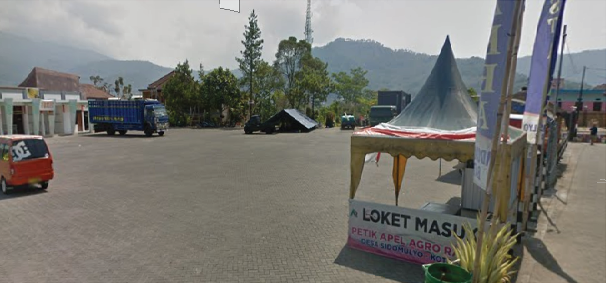
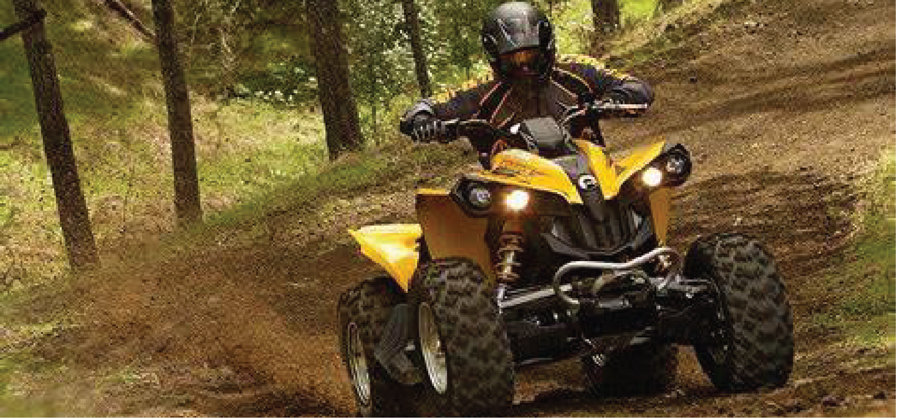

Harga Masuk: Rp.25000

Harga Apel: Rp.12000

Harga Sewa ATV: Rp.400000

Tahukah kalian bahwa di Batu ada tempat petik apel yang menarik loo!! Namanya agro rakyat. Agro rakyat terletak di jalan Raya Sidomulyo, Kec. Batu, Malang, Jawa Timur. Nah disini kalian dapat melihat pemandangan kebun apel yang sangat luas dan indah. Agro wisata ini memiliki 4 macam apel yang bisa kalian temukan lo! Yang pertama adalah apel manalagi, lalu ada apel anna, apel rome beauty, dan yang terakhir adalah apel wanglin. Di Agro rakyat kalian bisa mencoba setiap jenis nya secara bebas. Dalam memetik apel ada beberapa aturan yang akan diberikan oleh tourguide.
Dengan banyak nya macem macem apel di agro wisata kamu dapat belajar lebih lanjut mengenai apel apel di agro rakyat. Mau mencari informasi informasi mengenai apel, observasi apel, makan apel sampai kenyang, di sini kalian bisa melakukan nya lo ( asalkan jangan melakukan hal yang berbahaya ya.. ihihi..). di agro rakyat kalian bebas mengambil apel yang ada disana sepuas nya. Dan jika kita akan membawa pulang apel, kita akan dikena kan biaya sebesar 12 ribu per kilo nya.
Untuk menuju kebun apel. kalian akan ditemani oleh tour guide dan Letak kebun sekitar 15 menit dari tempat pembelian tiket.Di Agro rakyat kalian juga tidak perlu kuatir untuk mencari tempat makan atau hotel. Di dekat agro rakyat terdapat banyak sekali restoran restoran yang menyuguhkan makanan yang enak dan hotel hotel mulai dari yang termurah hingga yang paling mahal.
Tempat: Jalan Raya Sidomulyo
Sidomulyo, Kec. Batu, Malang, Jawa Timur 65317
Jam buka: 07.00-18.00